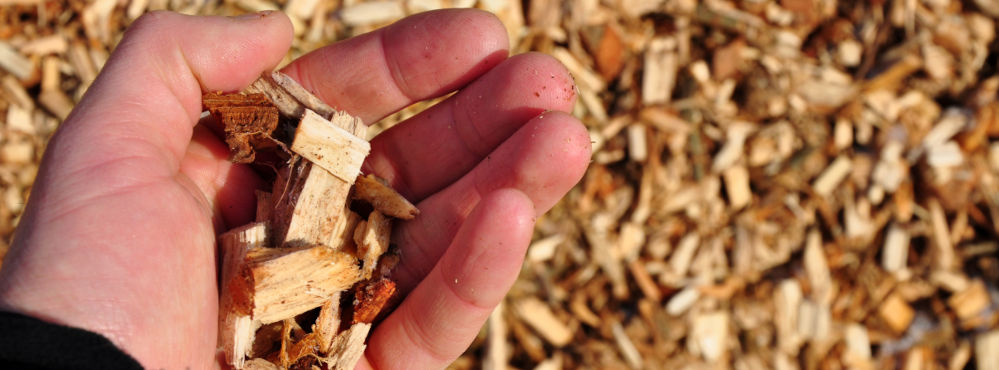

História da Fünkhaus
Nascida da parceria de cinco mulheres empreendedoras — Jamini, Deise, Vanessa, Natielly e Taynara — a Madeireira Fünkhaus é fruto da união de diferentes famílias que compartilham o mesmo propósito: dar continuidade à tradição madeireira de Cavaco da região, localizada no município de Ibirama (SC), de forma sustentável e inovadora.
Com mãos habilidosas, experiência compartilhada e profundo conhecimento do manejo florestal, transformamos a madeira excedente, como cascas, galhos e outras aparas em cavaco de alta qualidade, utilizado como matéria-prima renovável na produção de energia, papel e outras indústrias. Dessa forma, nada se perde, tudo se fortalece.
A empresa apresenta a combinação perfeita entre tradição e modernidade: ao mesmo tempo que compartilhamos o saber fazer de várias gerações, também investimos nas melhores tecnologias para atender às exigências do mercado, respeitando o meio ambiente e sendo certificados pelo manejo sustentável de nossos recursos.
Com orgulho de nossas origens e do caminho que compartilhamos, contribuímos para o desenvolvimento de Ibirama, gerando emprego, parceria com comunidades e compartilhando riqueza e crescimento. A Madeireira Fünkhaus quer fazer a diferença, mostrando que é perfeitamente possível unir tradição, sustentabilidade e progresso.
Nosso Produto
Como o Cavaco é Produzido:
A produção de cavaco na Madeireira Fünkhaus segue um processo cuidadoso, sustentável e de alta eficácia, realizado a partir do aproveitamento de resíduos de madeira, como cascas, galhos, pontas de tora e outras aparas que seriam descartados em outras circunstâncias.
Seleção da matéria-prima
Primeiro, a madeira residual é coletada junto às fontes florestais certificadas, sendo transportada até nosso pátio de armazenamento. Apenas o material de origem sustentável passa pelo controle de qualidade, sendo ele livre de contaminações como terra, metais ou outras impurezas.
Picagem
Em seguida, o material passa pelo picador, um equipamento de lâminas robustas que corta a madeira em partículas uniformes: o cavaco. O tamanho das partículas é regulado para atender às especificações exigidas pelo mercado, sendo utilizado tanto como combustível renovável quanto como matéria-prima na produção de papel, MDF e outras aplicações.
Peneiramento e Classificação
Após a picagem, o cavaco passa pelo peneirador, que faz a triagem das partículas, removendo as muito finas (pó) ou muito grandes. Apenas o cavaco que atender ao padrão de tamanho e uniformidade segue para a próxima etapa.
Armazenamento e Distribuição
Com o cavaco de alta qualidade obtido, ele é armazenado de forma adequada, ao abrigo da chuva e da umidade, para que conserve suas características. Posteriormente, ele é embalado e transportado para nossos parceiros e clientes, sendo utilizado como combustível de caldeiras, matéria-prima para a fabricação de papel e celulose, ou como base para outras aplicações da indústria da madeira.
